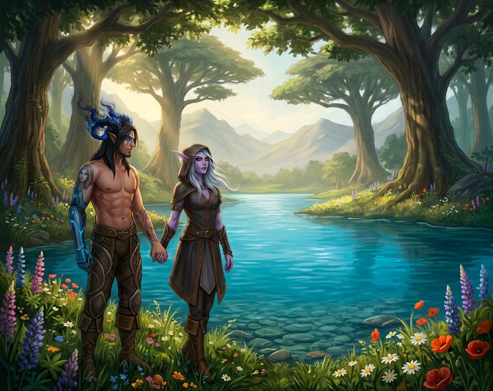

Capítulo Trinta e Sete
O lago
Foi no segundo dia que eles encontraram o lago.
Não estavam procurando. Não tinham razão para procurar — não havia mapa, não havia destino, não havia nada além de dois corpos que queriam explorar um mundo que não era a Gorja, que queriam sentir grama debaixo dos pés e vento no rosto e sol na pele e todas as coisas que tinham sido negadas a eles por dois anos e meio.
Então eles caminharam. Pela manhã. Com as mãos dadas e os anéis pulsando suavemente no mesmo ritmo. Sem pressa. Sem destino. Apenas caminhando, do jeito que se caminha quando se tem tempo e não se tem medo.
E então, depois de uma curva no caminho — uma curva que não estava no mapa porque não havia mapa — eles viram.
✦

O lago era azul.
Não o azul do céu — embora refletisse o céu e dobrasse o azul, como se o mundo tivesse dois céus em vez de um. Era um azul diferente. Mais profundo. Mais denso. Azul de água que existe há muito tempo e que sabe de coisas que a superfície não conta.
Era cercado de árvores — aquelas mesmas árvores de troncos grossos e copas largas que eles tinham visto no primeiro dia, mas aqui elas eram mais densas, mais juntas, formando uma espécie de muro verde que protegia o lago do resto do mundo. E atrás das árvores, ao longe, montanhas — não altas, não imponentes, apenas montanhas suaves, verdes, do tipo que existem em lugares onde a paz é mais importante do que a grandeza.
E o lago estava vazio. Sem ninguém. Sem barcos, sem casas, sem sinais de vida além das árvores e dos pássaros que cantavam e dos peixes que às vezes saltavam na superfície, criando ondas pequenas que se espalhavam e desapareciam.
Sylvanas parou. Olhou para o lago. Olhou para Nathan. E algo nos olhos vermelhos dela mudou — não muito, não dramaticamente, mas o suficiente. Uma suavização. Uma curiosidade. Algo que parecia... diversão.
— Você sabe nadar? — perguntou ela.
Nathan piscou.
— Sei. Quer dizer, acho que sei. Eu sei. Por quê?
Sylvanas não respondeu. Apenas começou a tirar a roupa.
✦
A túnica primeiro.
Devagar. Do jeito que ela fazia tudo — com controle, com intenção, com aquela precisão que transformava cada gesto em algo que parecia calculado mesmo quando não era. O tecido escuro deslizou pelos ombros roxos, desceu pelo corpo, caiu na grama sem fazer som.
E ela ficou ali. De pé. Na beira do lago. Sem nada.
O sol da manhã batia na pele dela — naquela pele roxa que era diferente de qualquer pele que existia, que brilhava de um jeito sutil quando a luz batia, como se tivesse partículas de prata misturadas, como se fosse feita de algo que não existia no mundo dos vivos.
E Nathan olhou. Porque o que mais ele podia fazer? Porque ela estava ali, nua, na beira de um lago azul, com o cabelo prateado caindo sobre os ombros e os olhos vermelhos olhando para ele com aquela expressão que era metade provocação e metade convite.
— Você vem? — perguntou ela.
— Eu... — Nathan engoliu. — Você não vai... quer dizer, a água... você é...
— Morta? — Sylvanas completou, com um meio sorriso. — Eu sei. Eu não preciso respirar. Eu não sinto frio. Eu não me afogo. — Ela deu um passo em direção à água. Os pés dela tocaram a superfície. — Mas eu posso entrar. E eu quero.
E entrou.
✦
A água subiu devagar.
Pelos tornozelos. Pelas canelas. Pelos joelhos. Subindo, envolvendo, cobrindo — cada centímetro de pele roxa desaparecendo sob a superfície azul, como se o lago estivesse engolindo ela, como se estivesse puxando ela para dentro.
E Sylvanas não parou. Continuou andando. Até a água chegar na cintura. No peito. Nos ombros. Até ela estar submersa — quase inteira, apenas a cabeça fora d'água, o cabelo prateado flutuando na superfície como algas, como algo vivo, como algo que pertencia à água tanto quanto à terra.
E então ela olhou para Nathan. E sorriu.
— Você ainda está vestido — disse ela.
Nathan olhou para si mesmo. Para a calça. Para os sapatos. Para o sobretudo que ele tinha tirado e deixado na grama. E então olhou para ela — para o rosto dela parcialmente submerso, para os olhos vermelhos que brilhavam na luz da manhã, para o sorriso que era metade provocação e metade convite.
— Eu estou indo — disse ele.
— Está demorando.
— Eu estou...
— Nathan.
Ele tirou a calça. E os sapatos. E ficou ali. De pé. Na beira do lago. Sem nada.
E Sylvanas olhou. Do jeito que ele tinha olhado para ela antes — com reverência, com desejo, com aquele tipo de olhar que não é sobre querer, é sobre agradecer. Mas havia algo a mais no olhar dela. Algo que não estava no dele. Algo que era... brincadeira.
— Você tem uma tatuagem minha no braço — disse ela, como se estivesse comentando o tempo.
— Tenho.
— Há quatro anos.
— Há quatro anos.
— E você nunca me viu nua.
Nathan piscou.
— Quer dizer, eu vi. Na tenda. Várias vezes. Nós...
— Na tenda era escuro. — Sylvanas nadou mais para o centro do lago. A água cobriu ela até o pescoço. — Aqui é claro. Aqui você pode ver tudo.
E então ela mergulhou.
✦
Nathan entrou na água.
Rápido. Mais rápido do que ele pretendia, porque o chão era liso e ele escorregou e caiu de joelhos e a água gelada subiu pelo corpo dele e ele sentiu o choque — porque a água era fria, muito fria, do tipo de frio que acorda cada nervo do corpo e faz o coração bater mais rápido e a respiração ficar mais curta.
E então ele sentiu mãos.
Mãos frias. Mais frias do que a água. Mãos que ele conhecia — que ele tinha tocado mil vezes, que ele tinha segurado, que ele tinha beijado dedo por dedo — mas que agora estavam em lugares diferentes. Mãos nas costas dele. Mãos descendo. Mãos puxando ele para mais fundo, para mais perto, para dentro da água onde ela estava.
E quando ele emergiu — quando a cabeça dele saiu da água e ele conseguiu respirar — Sylvanas estava na frente dele. Perto. Muito perto. O corpo dela contra o corpo dele, submerso, invisível, mas presente — cada curva, cada centímetro, cada parte dela que ele conhecia de memória mas que agora era diferente porque agora estava sob a água, escondida, secreta.
— Você está tremendo — disse ela.
— A água tá fria.
— Eu não sinto.
— Eu sei. Você é morta.
— E isso te incomoda?
— Não. — Nathan sorriu. — Só significa que eu tenho que esquentar você.
E puxou ela para perto. O corpo dele contra o corpo dela. O calor dele encontrando o frio dela. E os anéis brilharam — suave, breve, dourado — do jeito que brilhavam quando o sentimento era grande demais para ficar contido.
✦
Sylvanas provocou.
Não do jeito antigo — não do jeito calculado, frio, distante que ela usava quando ainda não confiava, quando ainda media palavras e gestos como se cada um fosse uma arma que podia ser usada contra ela. Essa provocação era diferente. Era quente. Era íntima. Era do tipo que só existe entre duas pessoas que se conhecem tão bem que não precisam mais de máscaras.
Ela passou a mão pelo peito dele. Devagar. Descendo. Sentindo cada músculo, cada cicatriz, cada marca que ela conhecia de memória mas que queria tocar de novo, sempre de novo.
— Você mudou — disse ela.
— Mudei?
— Desde que chegou aqui. Desde que saiu da Gorja. Seu corpo está... diferente. Mais leve. Menos tenso. — A mão dela desceu mais. — Como se você tivesse largado um peso que nem sabia que carregava.
— Talvez eu tenha.
— E o que você vai fazer com toda essa leveza?
Nathan não respondeu. Porque a mão dela tinha descido mais. E a respiração dele tinha mudado. E o coração dele — aquele coração que batia, que era vivo, que era real — tinha acelerado.
— Sylvanas...
— Hm?
— O que você está fazendo?
— Nadando. — Ela sorriu. Aquele sorriso que era só dele, que era só deles, que era só deles dois no mundo inteiro. — E você?
— Eu estou tentando não me afogar.
— Você sabe nadar.
— Eu sei. Mas você está dificultando.
— Estou?
— Está.
— Bom.
✦
Ela beijou ele.
Não devagar — não dessa vez. Dessa vez foi urgente. Foi faminto. Foi do tipo que não pede permissão, que não mede distância, que apenas toma. A boca dela na boca dele, fria por fora e quente por dentro, a língua dela encontrando a dele, os corpos deles se encontrando sob a água — submersos, escondidos, secretos.
E as mãos dela desceram mais. E as mãos dele subiram. E os corpos deles se moveram juntos — na água, sob a água, do jeito que corpos se movem quando não precisam mais de terra firme, quando a gravidade não importa, quando o único peso que existe é o peso um do outro.
— Sylvanas — disse ele, entre beijos, entre respirações, entre o som da água e o som dos corações. — A gente não devia...
— Por quê?
— Porque... — Ele parou. Pensou. — Porque a gente parou ontem. Porque a gente precisa...
— Parou onde?
— Na cama. A gente...
— A gente não parou. — Ela mordeu o lábio inferior dele. Suave. Provocante. Do jeito que ela fazia quando queria que ele perdesse o controle. — A gente apenas mudou de lugar.
E Nathan perdeu.
Perdeu o controle. Perdeu a razão. Perdeu tudo que não era ela, tudo que não era aquele momento, tudo que não era aquele corpo contra aquele corpo, aquela boca contra aquela boca, aquele lago azul que os envolvia e os escondia e os protegia do resto do mundo.
✦
Eles fizeram amor na água.
Não foi como na cama. Não foi como na tenda. Não foi como em nenhum dos lugares onde eles tinham feito antes. Foi diferente. Foi novo. Foi deles.
A água os segurava — os sustentava, os envolvia, os escondia. Os corpos deles flutuavam parcialmente, submersos parcialmente, existindo em dois mundos ao mesmo tempo — o mundo de cima, onde o sol brilhava e os pássaros cantavam e o céu era azul, e o mundo de baixo, onde a água era fria e escura e secreta.
E Sylvanas — Sylvanas que não respirava, que não precisava de ar, que existia num espectro diferente — segurou Nathan. Segurou ele contra ela, dentro dela, em volta dela. E ele se segurou nela. Porque a água era instável, porque o chão era escorregadio, porque o único ponto fixo no mundo inteiro era ela.
E os anéis brilharam. Sob a água. Dourado contra azul. Como estrelas submersas. Como algo que não pertencia a nenhum dos dois mundos mas que existia nos dois ao mesmo tempo.
E quando veio — quando o corpo dele chegou ao limite e ultrapassou e se desfez e se refez — ele enterrou o rosto no pescoço dela. E sentiu o corpo dela apertar em volta dele. E sentiu o peito dela pulsar — uma vez, duas, três — no mesmo ritmo do coração dele. E sentiu os anéis brilharem — forte, dourado, intenso — iluminando a água em volta deles, transformando o lago em ouro por um instante, como se o que existia entre eles fosse tão grande que não cabia nos corpos e transbordava para o mundo inteiro.
✦
Eles ficaram na água por muito tempo.
Não se movendo. Não falando. Apenas existindo. Corpos submersos, cabeças fora d'água, braços em volta um do outro, anéis pulsando no mesmo ritmo.
E então Sylvanas falou.
— Nathan.
— Hm.
— A gente devia voltar.
— Para a casa?
— Para a cama.
Nathan riu. Baixinho. Do jeito que se ri quando a pessoa que a gente ama diz algo que é ao mesmo tempo absurdo e completamente esperado.
— Por quê?
— Porque a água é fria. E eu não sinto, mas você sente. E porque a cama é macia. E porque... — Ela parou. Sorriu. Aquele sorriso. — Porque a gente não terminou ontem. A gente apenas pausou. E eu quero continuar.
— Continuar?
— A lua de mel. — Ela beijou ele. Devagar. Profundo. — A gente começou ontem. E eu quero que continue. Hoje. Amanhã. Depois. Pelo tempo que a gente quiser.
E Nathan sorriu. E apertou ela contra ele. E disse:
— Então a gente continua.
✦
Eles saíram da água.
Devagar. Do jeito que se sai de lugares bons — sem pressa, sem vontade, apenas porque o corpo precisa, porque a pele precisa de ar, porque existem coisas que não podem ser feitas na água.
E ficaram na grama. Secando ao sol. Corpos nus sob a luz da manhã, sem vergonha, sem pressa, sem nada além do conforto de existir no mesmo espaço, no mesmo tempo, no mesmo mundo.
E então eles se vestiram. Devagar. Porque não havia pressa. Porque o mundo podia esperar. Porque a casa de Mira estava ali, a poucos minutos de caminhada, e a cama estava esperando, e os lençóis brancos estavam esperando, e a lua de mel — que tinha começado ontem e que não tinha data para acabar — estava esperando.
E eles caminharam de volta. De mãos dadas. Com os anéis pulsando no mesmo ritmo. Com os corpos ainda úmidos e os cabelos ainda molhados e a pele ainda sentindo o toque da água e o toque um do outro.
E quando chegaram em casa — quando abriram a porta e entraram e foram direto para o quarto, sem passar pela cozinha, sem parar para comer, sem fazer nada além de ir para o lugar onde eles queriam estar — eles tiraram a roupa de novo.
E deitaram na cama.
E continuaram.
✦
Do lado de fora, Varokh estava sentado na varanda.
Olhando para o horizonte. Com o machado no colo. De vigia. Como sempre.
E quando ele viu os dois voltando do lago — de mãos dadas, molhados, sorrindo — ele não disse nada. Não grunhiu. Não comentou. Apenas olhou para Elyra, que estava ao lado dele, e Elyra olhou para ele, e os dois trocaram um olhar que dizia tudo que precisava ser dito.
Eles estão bem.
Estão.
E a gente?
A gente tá bem também.
E Varokh voltou a olhar para o horizonte. E Elyra voltou a limpar as facas. E os dois ficaram ali — na varanda, de vigia, guardando não apenas a casa, mas a paz que existia dentro dela.
E do quarto, de vez em quando, vinha um som. Baixo. Abafado. Do tipo que só existe quando duas pessoas estão fazendo algo que não precisa ser ouvido por mais ninguém.
E Varokh não demonstrava. Porque Varokh tinha aprendido, em quatrocentos anos, que a coisa mais nobre que um guerreiro pode fazer não é lutar. É guardar.
E o que ele guardava, naquele dia, era a lua de mel de duas pessoas que mereciam ter uma lua de mel.
E isso, ele pensou, valia mais do que qualquer batalha.